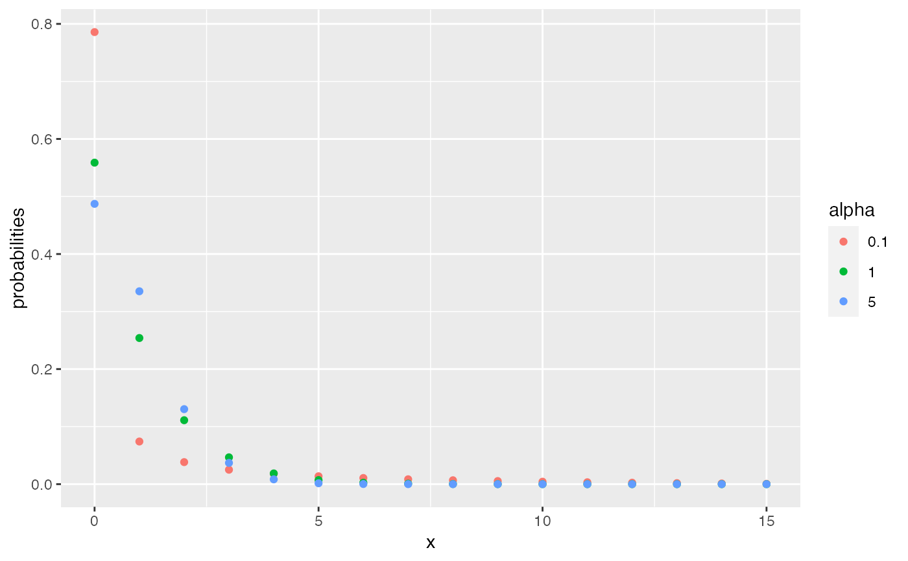

Density, distribution function and quantiles for visual inference scenarios.
Visual inference is used to determine significance of a visual finding.
The lineup protocol (Buja et al., 2009) establishes a formal framework for
testing graphical findings. The package nullabor helps with the creation
of lineups using various null generation models.
Here, we provide functions to evaluate results.
dVis(x, K, m = 20, alpha, scenario = 3) pVis(x, K, m = 20, alpha, scenario = 3, lower.tail = TRUE) qVis(p, K, m = 20, alpha, scenario = 3)
| x | vector, number of data identifications, |
|---|---|
| K | positive value, number of evaluations of the lineup, |
| m | number of panels in the lineup, |
| alpha | positive value, rate parameter of the flat Dirichlet distribution, |
| scenario | integer value. |
| lower.tail | defaults to TRUE, if TRUE probabilities are \(P(X \leq x)\), otherwise, \(P(X \geq x)\). Note that the second probability is a deviation from R standard: usually \(P(X > x)\) is returned. However, here, returning \(P(X \geq x)\) is more useful in an inference setting, as it corresponds to the p value. |
| p | (vector of) probabilities, |
The functions return (a vector of) quantiles or probabilities for \(P(X = x)\), \(P(X \leq x)\).
When administering visual tests, we distinguish between three different scenarios:
Scenario 1: in each of K evaluations a different data set and a different set of (m-1) null plots is shown.
Scenario 2: in each of K evaluations the same data set but a different set of (m-1) null plots is shown.
Scenario 3: the same lineup, i.e. same data and same set of null plots, is shown to K different observers.
Under scenario 3, the number of data picks under the null hypothesis that the data plot is visually not more salient than one of the null plots is distributed according to a ratio of Beta functions: $$P (X = x) = {K \choose x} \frac{B(x + \alpha, K-x+(m-1)\alpha)}{B(\alpha, (m-1)\alpha)}$$ where \(B(.,.)\) is the Beta function, \(\alpha > 0\) is the rate of a flat Dirichlet distribution, \(K\) is the number of times the lineup has been evaluated, \(x\) number of times the data plot has been picked as the visually most interesting, \(m\) is the number of panels in a lineup (the lineup size).
For large values of alpha, scenario 3 converges to scenario 1.
Andreas Buja, Dianne Cook, Heike Hofmann, Michael Lawrence, Eun-Kyung Lee, Deborah F. Swayne and Hadley Wickham, Statistical inference for exploratory data analysis and model diagnostics. Phil. Trans. R. Soc. A. 367: 4361-4383, 2009, https://doi.org/10.1098/rsta.2009.0120
# Probabilities to see between 5 and 10 data identifications # in lineup of size 20, with 15 evaluations, and an estimated # alpha of 0.1 dVis(x=5:10, K= 15, m=20, alpha = 0.1)#> [1] 0.013705202 0.010687543 0.008466755 0.006754377 0.005386402 0.004262284dframe <- data.frame( x=0:15, probabilities = c(dVis(0:15, K=15, alpha = 0.1), dVis(0:15, K=15, alpha = 1), dVis(0:15, K=15, alpha = 5)), alpha = factor(rep(c(0.1, 1, 5), each = 16)) ) library(ggplot2) ggplot(data = dframe, aes(x = x, y = probabilities, colour = alpha)) + geom_point()# how many data picks do we need in a lineup of size m # with K = 30 evaluations and alpha = 0.1 to achieve a # significance at 10%, 5% or 1%? qVis(p = c(0.9, 0.95, 0.99), K = 30, m=20, alpha = 0.1)#> [1] 5 10 20